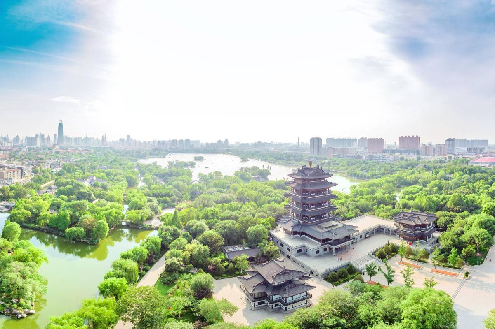

Top 3 Nature Spots in Jinan
Baotu Spring Park

Introduction
Baotu Spring Park is Jinan’s most famous attraction—and the "head of Jinan’s 72 springs." The park covers 158 mu (about 10.5 hectares) and centers on Baotu Spring, a natural spring where water bursts up from three outlets (called "three lotuses") with a clear, rhythmic gurgle. The spring’s water is so pure it’s been used to make tea and brew wine for centuries—local records about it date back over 2,000 years.Beyond the main spring, the park is a lush garden with willow trees, peony flowers (in spring), and small lakes connected by stone bridges. Key spots include the "Wanghe Pavilion" (where you can overlook the spring and surrounding gardens), the "Peony Garden" (with over 200 varieties of peonies), and the "Spring Culture Museum" (which explains the history and science of Jinan’s springs). In early spring, the park hosts a peony festival—thousands of flowers bloom, drawing locals and tourists alike.
Best Time to Visit
Spring (March–April): Peony flowers bloom, 10°C–20°C.
Autumn (October–November): Cool weather, clear water, and fewer tourists.
Price
Park Entry: 40 CNY/adult; 20 CNY/students (with valid ID); free for kids under 1.4 meters.
Spring Water Tea: 30–50 CNY/cup (at Baotu Tea House).
Daming Lake

Introduction
Daming Lake is a 46-hectare spring-fed lake in the heart of Jinan—famous for its clear water, willow-lined shores, and connection to ancient Chinese legends (it’s mentioned in classic novels like The Romance of the Three Kingdoms). The lake is fed by 20+ springs, so its water stays clean and cool year-round—you can often see fish swimming near the surface, even in summer.The lake is surrounded by scenic spots: the "South Bank Scenic Area" (with pavilions and stone tablets), the "North Island" (home to the "Lotus Pavilion," a historic building with lake views), and the "Willow Dyke" (a path lined with willow trees, perfect for walks). Boating is the best way to experience the lake—you can rent a traditional wooden boat (rowed by a guide, 120 CNY/hour for 2–4 people) or an electric boat (self-driven, 80 CNY/hour for 4 people). In summer, lotus flowers bloom on the lake’s surface, turning it into a sea of pink.
Best Time to Visit
Summer (July–August): Lotus flowers bloom, 25°C–30°C (visit in the morning/evening to avoid heat).
Autumn (September–October): Mild weather, clear skies, and beautiful sunsets.
Price
Lake Shore Area: Free entry (no charge to walk around the lake).
Boat Rental: Wooden boat (120 CNY/hour for 2–4 people); electric boat (80 CNY/hour for 4 people).
Ferry to North Island: 10 CNY/person (round-trip).
Black Tiger Spring

Introduction
Black Tiger Spring is one of Jinan’s most beloved springs—named for the three stone tiger heads from which its water gushes out (the sound of water hitting the pool below resembles a tiger’s roar). It’s located in a quiet park along the Moat River, covering 1.5 hectares, and is a favorite among locals for its fresh water and peaceful atmosphere. Unlike Baotu Spring (which is more touristy), Black Tiger Spring feels like a community spot: every morning, locals bring large bottles and buckets to fill up on spring water (it’s free and safe to drink). The spring’s water is cold and sweet—many people use it to make tea or cook rice. The park around the spring has stone benches, willow trees, and views of the Moat River—you can walk along the riverbank after visiting the spring, or rent a bike to explore the nearby "Moat Greenway" (a 6-kilometer path along the river).
Best Time to Visit
Spring (April–May): Mild weather, 12°C–18°C—perfect for walking along the river.
Winter (December–January): The spring’s water doesn’t freeze, and the park is quiet—drinking cold spring water is a unique experience (but bring gloves!).
Price
Black Tiger Spring Park: Free entry.
Moat Greenway: Free (no charge to walk or bike).